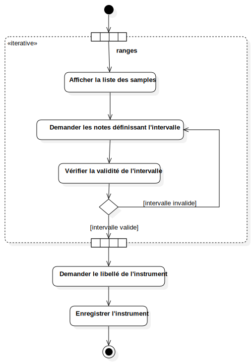

Activity1
UMLActivity
JAMS — Just Another Music Studio
::
Use Case Model
::
Instrument UC
::
Create an instrument
::
Activity1
Description
none
Diagrams

Create an instrument
Nodes
initial
Enregistrer l'instrument
final
ranges
Edges
(initial→)
(→Afficher la liste des samples)
(DecisionNode1→Demander les notes définissant l'intervalle)
(Vérifier la validité de l'intervalle→DecisionNode1)
(DecisionNode1→)
(→Enregistrer l'instrument)
(Enregistrer l'instrument→final)
(Afficher la liste des samples→Demander les notes définissant l'intervalle)
(Demander les notes définissant l'intervalle→Vérifier la validité de l'intervalle)
Properties
Name
Value
name
Activity1
stereotype
null
visibility
public
isReentrant
true
isReadOnly
false
isSingleExecution
false
Owned Elements
Create an instrument